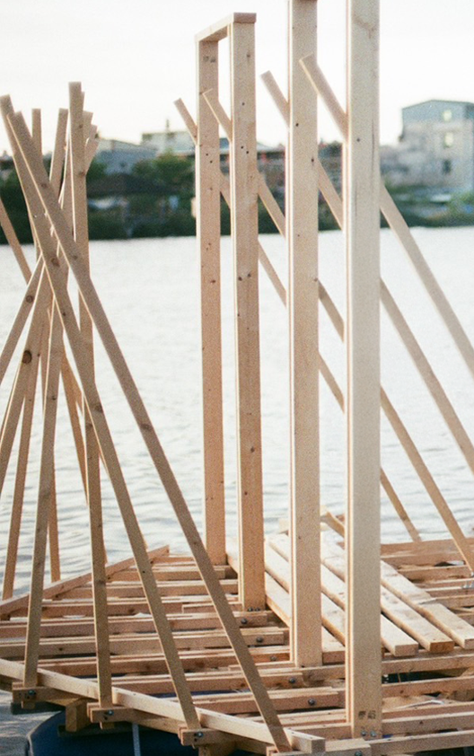
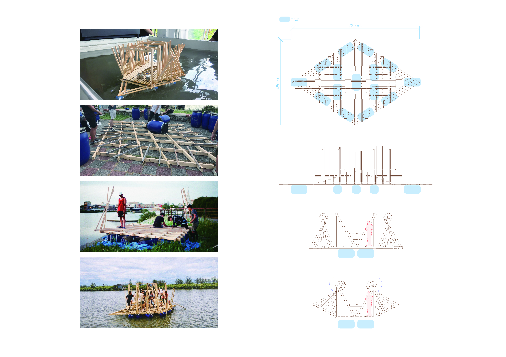
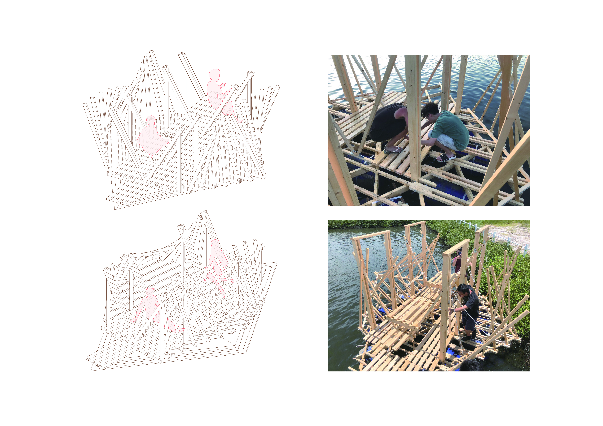

Aqua Spider
Salt Marsh Waterfront Structures under Extreme Climate Change
The project explores the design and construction of floating structures as a response to extreme climate conditions and saltwater shoreline environments, integrating architectural design with structural and hydraulic principles. Developed through interdisciplinary collaboration, the project involved the full-scale construction of floating frameworks on site, where buoyancy, structural stability, and spatial organization were tested through hands-on making. Physical performance and environmental forces directly informed design decisions throughout the process. The project concludes by framing floating architecture as an adaptive infrastructure and a collective spatial platform at the water’s edge, engaging both environmental conditions and local communities.
NTU Civil Engineering & NCKU Architecture Collaborative Design Workshop
Date: 2021 (B.Arch Year 3)
Type: Tectonic
Location: Tainan, Taiwan
Design Team: NCKU Architecture (7), NTU Civil Engineering (4)
Instructor: H. Capart, Yang Shi-Hong

